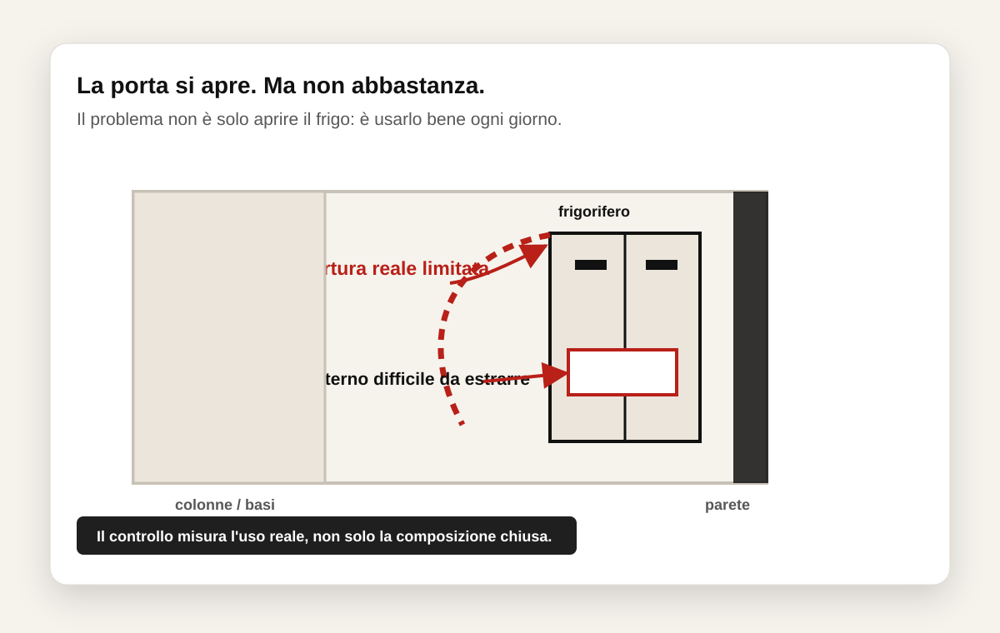

Micro caso reale
Il frigorifero apriva. Ma non abbastanza per usarlo bene.
Nel progetto sembrava tutto corretto. Il problema compariva quando si cercava di estrarre comodamente ripiani e cassetti interni.

Cosa sembrava nel progetto
La porta del frigorifero riusciva ad aprirsi.
Guardando il render o la piantina, il frigorifero sembrava compatibile con lo spazio. La misura appariva sufficiente e il problema non risultava evidente.
Cosa succedeva davvero
L'apertura era teoricamente possibile ma poco funzionale.
Il punto importante
Aprire un elemento non significa usarlo bene.
Molti controlli vengono fatti solo sulla compatibilità teorica delle misure. Però una cucina deve funzionare nell'uso quotidiano: apertura reale, movimenti, accesso comodo e utilizzo continuo.
Controlla il tuo progetto
Vuoi capire se ci sono problemi nascosti nel tuo spazio?
Sistema 90G controlla aperture, passaggi e utilizzo reale prima della decisione finale.
Invia il tuo progetto